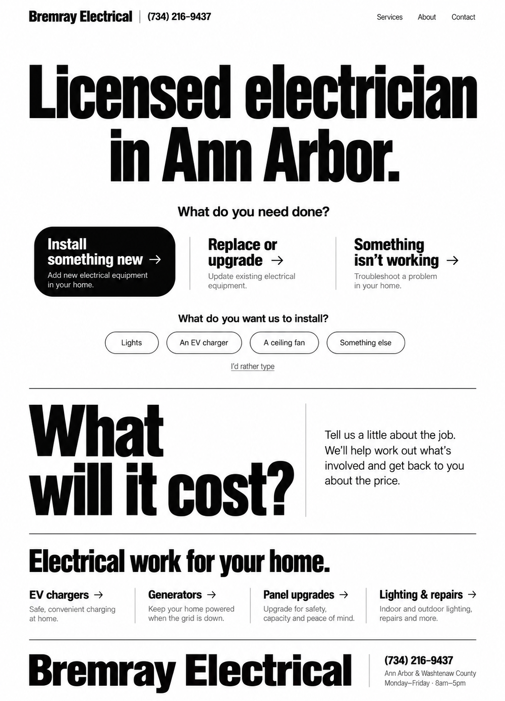

Three new directions.
Choose a design to see the full homepage.
Static renders · Live website unchanged

What changes?
| Direction | First impression | How the request starts |
|---|---|---|
| 01 / Type | Bold and direct | Open choices beneath a centered headline |
| 02 / Editorial | Calm and established | A request column beside the main headline |
| 03 / Service desk | Practical and energetic | An open workspace beside a compact navigation rail |
These images explore layout, typography and color. The forms and links inside them are pictures. Imagery and wordmarks are exploratory; final copy will follow Bremray’s saved voice and confirmed business facts.